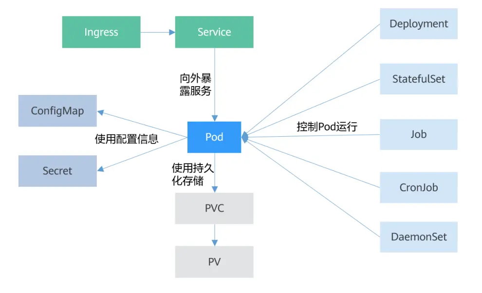

Kubernetes 基本对象

Pod 是 Kubernetes 创建或部署的最小单位
一个 Pod 封装一个或多个容器 （container）、存储资源（volume）、一个独立的网络 IP 以及管理控制容器运行方式的策略选项。
Deployment 是对 Pod 的服务化封装
一个 Deployment 可以包含一个或多个 Pod， 每个 Pod 的角色相同，所以系统会自动为 Deployment 的多个Pod分发请求。
StatefulSet 是用来管理有状态应用的对象
和 Deployment 相同的是，StatefulSet 管理了基于相同容器定义的一组 Pod。但和 Deployment 不同的是，StatefulSet 为它们的每个 Pod 维护了一个固定的名字。这些 Pod 是基于相同的声明来创建的，但是不能相互替换，无论怎么调度，每个 Pod 都有一个永久不变的名字。
Job 是用来控制批处理型任务的对象
批处理业务与长期伺服业务 （Deployment）的主要区别是批处理业务的运行有头有尾，而长期伺服业务在用户不停止的情况下永远运行。
Job 管理的 Pod 根据用户的设置把任务成功完成就自动退出，Pod 被自动删除。
CronJob 是基于时间控制的 Job
类似于 Linux 系统的 crontab，在指定的时间周期运行指定的任务。
DaemonSet 是这样一种对象（守护进程）
它在集群的每个节点上运行一个 Pod，且保证只有一个 Pod，这非常适合一些系统层面的应用，例如日志收集、资源监控等，这类应用需要每个节点都运行，且不需要太多实例，一个比较好的例子就是 Kubernetes 的 kube-proxy。
Service 是用来解决Pod访问问题的
Service 有一个固定IP地址，Service 将访问流量转发给 Pod，而且 Service 可以给这些 Pod 做负载均衡。
Ingress 路由转发
Service 是基于四层 TCP 和 UDP 协议转发的，Ingress 可以基于七层的 HTTP 和 HTTPS 协议转发，可以通过域名和路径做到更细粒度的划分。
ConfigMap 是一种用于存储应用所需配置信息的资源类型
用于保存配置数据的键值对，可以方便的做到配置解耦，使得不同环境有不同的配置。
Secret 是一种加密存储的资源对象
可以将认证信息、证书、私钥等保存在 Secret 中，而不需要把这些敏感数据暴露到镜像或者 Pod 定义中，从而更加安全和灵活。
PersistentVolume（PV） PV指持久化数据存储卷
定义的是一个持久化存储，比如一个 NFS 的挂载目录。
PersistentVolumeClaim（PVC）
Kubernetes 提供 PVC 专门用于持久化存储的申请，PVC 可以让你无需关心底层存储资源如何创建、释放等动作，而只需要申明需要何种类型的存储资源、多大的存储空间。